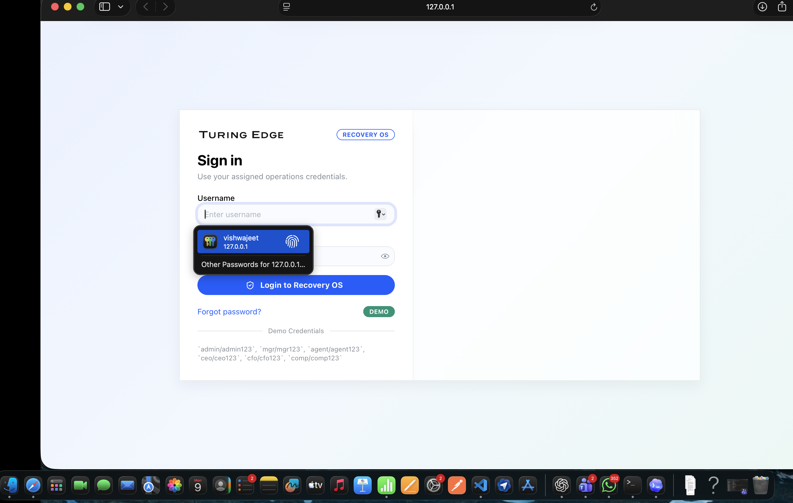
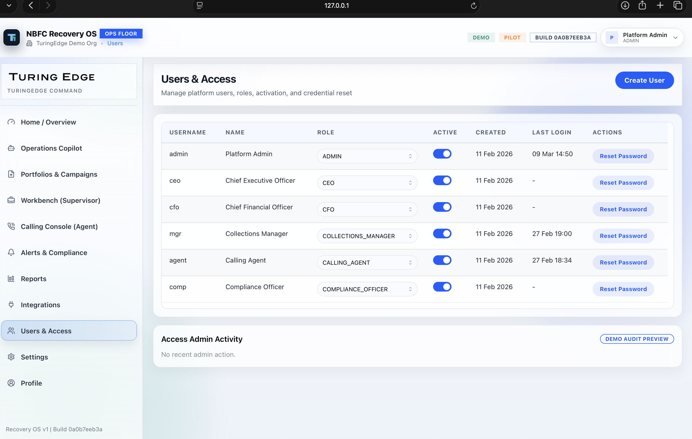

/login
Login / Branded Shell
Use as the opening beat to establish the product shell and brand before the workflow starts.
This page is the clean design library handoff for Figma. It keeps the strongest product surfaces large, labeled, and easy to duplicate into decks, trailers, or role-specific demo cuts.

Use as the opening beat to establish the product shell and brand before the workflow starts.

Supervisory proof layer for follow-through discipline, containment, and recovery pressure.

Category-setting screen for the product story and the strongest opener for a client-facing cut.

Evidence-backed answer panel with recommendations, expected impact, and governance-ready next steps.

Shows how a spreadsheet becomes a governed campaign without an ops handoff gap.

Queue management and intervention space for controlled operational execution.

Borrower brief, desk controls, and call-journey context in one aligned workspace.

PTP and callback capture panel that turns agent outcomes into structured operating data.

Operational exceptions and compliance ownership stay inside the same system.

Scheduled exports and audit-ready reporting for finance and leadership stakeholders.

Enterprise systems-fit proof covering sync issues, conflicts, and resolution flows.

Role-based control for admin, manager, agent, CFO, CEO, and compliance personas.